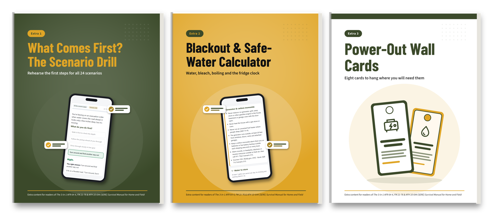

The 3-in-1 Survival Manual

New reader
Thank You!
The manual is yours now.
Waiting for you here:
- 1What Comes First? The Scenario Drill
- 2The Blackout & Safe-Water Calculator
- 3Power-Out Wall Cards
Clayton R. Brisco
Get Your Extra Content →